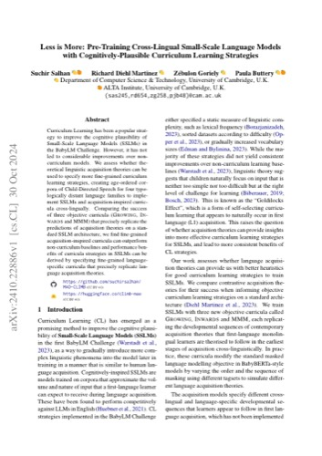
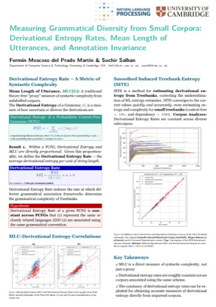
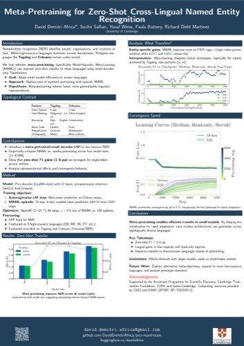
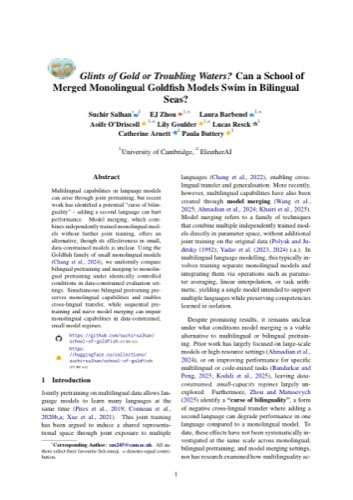
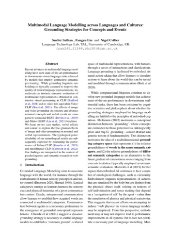
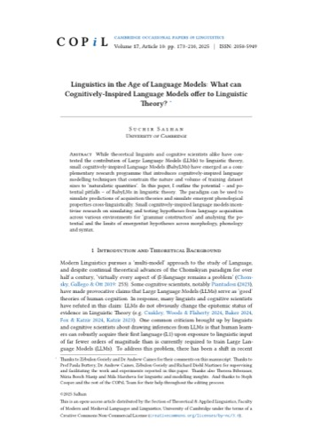

Publications
Publications
Peer-reviewed conference, journal, and workshop papers, plus working papers. Author names in bold indicate my contribution; ✦ marks equal contribution.
Peer-Reviewed Conference & Journal Publications 12
1
Richard Diehl-Martinez, David Demitri Africa, Yuval Weiss, Suchir Salhan, Ryan Daniels, Paula Buttery
EMNLP 2025 Systems Demonstration · Suzhou, China

AbstractBuilding language models (LMs), especially small and medium ones, remains more art than science. While large LMs often improve by sheer scale, it is still unclear why many design choices work. For small LMs, this uncertainty is more limiting: tight parameter budgets make each decision critical, yet researchers still lack systematic, scientific ways to test and refine new ideas. We introduce Pico, a lightweight, modular framework that enables systematic, hypothesis-driven research for small and medium-scale language model development. Pico consists of two libraries that together provide a practical sandbox where researchers can make targeted changes to a model's architecture or training procedures and directly observe their effects on the model's behavior. To support reproducible experimentation, we also release a suite of baseline models, pico-decoder, trained under standardized conditions and open-sourced for the community. Case studies highlight how Pico can support iterative small LM design and analysis.
2
Jaap Jumelet, Abdellah Fourtassi, Akari Haga, Bastian Bunzeck, Bhargav Shandilya, Diana Galvan-Sosa, Faiz Ghifari Haznitrama, Francesca Padovani, François Meyer, Hai Hu, Julen Etxaniz, Laurent Prévot, Linyang He, María Grandury, Mila Marcheva, Negar Foroutan, Nikitas Theodoropoulos, Pouya Sadeghi, Siyuan Song, Suchir Salhan, Susana Zhou, Yurii Paniv, Ziyin Zhang, Arianna Bisazza, Alex Warstadt, Leshem Choshen
EACL 2026 (Main Conference) · Rabat, Morocco
AbstractWe present BabyBabelLM, a multilingual collection of datasets modeling the language a person observes from birth until they acquire a native language. The project curates developmentally plausible training data covering approximately 100 million English word-equivalents across 45 languages, creates evaluation benchmarks, and trains baseline models to support multilingual pretraining research and language acquisition studies.
3
Leshem Choshen, Ryan Cotterell, Mustafa Omer Gul, Jaap Jumelet, Tal Linzen, Aaron Mueller, Suchir Salhan, Raj Sanjay Shah, Alex Warstadt, Ethan Gotlieb Wilcox
BabyLM Workshop 2026 @ EMNLP · Budapest, Hungary
4
A Computational Operationalisation of Competing Maturational Theories of Syntactic Development via Statistical Grammar Induction
Mila Marcheva, Suchir Salhan & Weiwei Sun
CogSci 2026 (Main Conference), Proceedings of the Annual Meeting of the Cognitive Science Society · Rio de Janeiro, Brazil
5
Fermín Moscoso del Prado Martín, Suchir Salhan
6
Fermín Moscoso del Prado Martín, Suchir Salhan
Proceedings of the Society for Computation in Linguistics (SCiL) · Presentation at ACL 2026, San Diego, USA
7
Structured Exposure Pretraining in Bilingual Language Models for Modelling L2 Language Processing
Suchir Salhan, Catherine Arnett, James Michaelov & Paula Buttery
8
LangMAP: A Language-Adaptive Approach to Tokenization
Clara Meister, Suchir Salhan, Andrzej Szablewski, Pietro Lesci, Paula Buttery & Tiago Pimentel
9
Cross-Lingual Alignment Without Joint Training: Do Monolingual Language Models Converge on Universal Representations?
EJ Zhou, Suchir Salhan, Catherine Arnett
10
Raising the Stakes: A Pedagogical Reframing of Automarking in Low-Stakes Assessment
Aoife O'Driscoll, Lily Goulder, Laura Barbenel, Suchir Salhan, Gabrielle Gaudeau, Andrew Caines & Paula Buttery
11
Emergence and Stability of Cross-Lingual Representations in Language Models
Suchir Salhan, Laura Barbenel, Lily Goulder, Aoife O'Driscoll, Andrew Caines, Catherine Arnett & Paula Buttery
12
xBLiMPs: Cross-Lingual Syntactic Minimal Pairs for Language Model Interpretability and Evaluation
Suchir Salhan, Nuria Bosch Masip, Yury Makarov, Rigel Cierniak, Laura Barbenel, Lily Goulder, Aoife O'Driscoll, Andrew Caines, Paula Buttery, Theresa Biberauer & Catherine Arnett
Peer-Reviewed Workshop Publications 14
13
Salhan, S.A.✦, Diehl-Martinez, Richard, Goriely, Zebulon & Buttery, Paula (2024)
CoNLL 2024 BabyLM Challenge (Paper Track) · Miami, Florida, USA (Nov 2024)

AbstractCurriculum Learning has been a popular strategy to improve the cognitive plausibility of Small-Scale Language Models (SSLMs) in the BabyLM Challenge. However, it has not led to considerable improvements over non-curriculum models. We assess whether theoretical linguistic acquisition theories can be used to specify more fine-grained curriculum learning strategies, creating age-ordered corpora of Child-Directed Speech for four typologically distant language families to implement SSLMs and acquisition-inspired curricula cross-lingually. Comparing the success of three objective curricula (Growing, Inwards & MMM) that precisely replicate the predictions of acquisition theories on a standard SSLM architecture, we find fine-grained acquisition-inspired curricula can outperform non-curriculum baselines and performance benefits of curricula strategies in SSLMs can be derived by specifying fine-grained language-specific curricula that precisely replicate language acquisition theories.
14
Zebulon Goriely, Suchir Salhan, Pietro Lesci, Julius Cheng, Paula Buttery
ICML 2025 Tokenization Workshop (TokShop) · Vancouver, Canada (August 2025)
AbstractRecent dynamic tokenisation methods operate directly on bytes and pool their latent representations into patches. This bears similarities to computational models of word segmentation that determine lexical boundaries using spikes in an autoregressive model's prediction error. Inspired by this connection, we explore whether grouping predictable bytes — rather than pooling their representations — can yield a useful fixed subword vocabulary. We propose a new information-driven subword tokeniser, ByteSpan, that uses an external byte-level LM during training to identify contiguous predictable byte sequences and group them into subwords. Experiments show that ByteSpan yields efficient vocabularies with higher morphological alignment scores than BPE for English. Multilingual experiments show similar compression and Rényi efficiency for 25 languages.
15
Fermín Moscoso del Prado Martín, Suchir Salhan
ACL 2025 Main Conference (Poster) · Vienna, Austria (August 2025)

SummaryIntroduces information-theoretic measures — derivational entropy rates alongside mean length of utterance — for quantifying grammatical diversity from small corpora, and shows that these estimates remain robust to the choice of syntactic annotation scheme (annotation invariance) and to limited corpus size.
16
David Demitri Africa, Suchir Salhan, Yuval Weiss, Paula Buttery, Richard Diehl-Martinez
5th Workshop on Multilingual Representation Learning (MRL), EMNLP 2025 · Suzhou, China

AbstractNamed-entity recognition (NER) in low-resource languages is usually tackled by finetuning very large multilingual LMs, an option that is often infeasible in memory- or latency-constrained settings. We ask whether small decoder LMs can be pretrained so that they adapt quickly and transfer zero-shot to languages unseen during pretraining. To this end we replace part of the autoregressive objective with first-order model-agnostic meta-learning (MAML). Tagalog and Cebuano are typologically similar yet structurally different in their actor/non-actor voice systems, and hence serve as a challenging test-bed. Across four model sizes (11 M – 570 M) MAML lifts zero-shot micro-F1 by 2–6 pp under head-only tuning and 1–3 pp after full tuning, while cutting convergence time by up to 8%. Gains are largest for single-token person entities that co-occur with Tagalog case particles si/ni, highlighting the importance of surface anchors.
17
Suchir Salhan, Hongyi Gu, Donya Rooein, Diana Galvan-Sosa, Gabrielle Gaudeau, Andrew Caines, Zheng Yuan, Paula Buttery
BabyLM Workshop, EMNLP 2025 · Suzhou, China
AbstractMulti-turn dialogues between a child and caregiver are characterized by a property called contingency – prompt, direct, and meaningful exchanges between interlocutors. We introduce ContingentChat, a Teacher–Student framework that benchmarks and improves multi-turn contingency in a BabyLM trained on 100M words. Using a novel alignment dataset for post-training, BabyLM generates responses that are more grammatical and cohesive. Experiments with adaptive Teacher decoding strategies show limited additional gains. ContingentChat highlights the positive benefits of targeted post-training on dialogue quality and presents contingency as a challenging goal for BabyLMs.
18
Bianca-Mihaela Ganescu, Suchir Salhan, Andrew Caines, Paula Buttery (Supervised MPhil Advanced Computer Science Thesis)
BabyLM Workshop, EMNLP 2025 · Suzhou, China
.jpg)
AbstractTraining vision-language models on cognitively-plausible amounts of data requires rethinking how models integrate multimodal information. Within the constraints of the Vision track for the BabyLM Challenge 2025, we propose a lightweight decoder-based architecture with (1) token-wise dynamic gating for adaptive fusion of linguistic and visual cues, (2) feature modulation and channel attention to maximise the utility of limited visual information and (3) auxiliary contrastive objectives for visual grounding. Evaluation on five benchmarks (BLiMP, BLiMP Supplement, EWoK, Winoground and VQA) shows competitive or superior performance to multimodal baselines. More notably, our dynamic gate discovers interpretable patterns without explicit supervision, favouring visual cues for content words and linguistic cues for function words. While we identify limitations in the Challenge constraints, such as the information bottleneck created by global image embeddings and training instability from the dataset split, our findings establish dynamic gating as a powerful tool for efficient multimodal learning, offering both interpretability and performance even under severe constraints.
19
Yuan Gao, Suchir Salhan, Andrew Caines, Paula Buttery, Weiwei Sun
BabyLM Workshop, EMNLP 2025 · Suzhou, China
AbstractCross-lingual extensions of the BabyLM Shared Task beyond English incentivise the development of Small Language Models that simulate a much wider range of language acquisition scenarios, including code-switching, simultaneous and successive bilingualism and second language acquisition. However, to our knowledge, there is no benchmark of the formal competence of cognitively-inspired models of L2 acquisition, or L2LMs. To address this, we introduce a Benchmark of Learner Interlingual Syntactic Structure (BLiSS). BLiSS consists of 1.5M naturalistic minimal pairs dataset derived from errorful sentence–correction pairs in parallel learner corpora. These are systematic patterns – overlooked by standard benchmarks of the formal competence of Language Models – which we use to evaluate L2LMs trained in a variety of training regimes on specific properties of L2 learner language to provide a linguistically-motivated framework for controlled measure of the interlanguage competence of L2LMs.
20
Suchir Salhan, Richard Diehl-Martinez, Zebulon Goriely, Paula Buttery
BabyLM Workshop, EMNLP 2025 · Suzhou, China

AbstractTransformer language models typically operate with a fixed-length context window, which has grown in step with large-scale pretraining datasets. In the BabyLM Challenge, however, many past submissions have defaulted to using much shorter sequence lengths. We examine the impact of sequence length on BabyLM pretraining, to answer the simple question: what sequence length should we be using when training Baby LMs? Using 100M-word training data and fixed compute budgets, we compare 125M-parameter Mamba and OPT models, finding that although longer is often better, the optimal length depends on both task and architecture. Shorter sequences are sufficient for grammatical generalization tasks whereas longer contexts benefit morphological analogical reasoning tasks.
21
Pedagogical Alignment of LLMs Requires Diverse Cognitively-Inspired Student Proxies
Suchir Salhan, Andrew Caines, Paula Buttery
NeurIPS First Workshop on CogInterp: Interpreting Cognition in Deep Learning Models, 2025 · San Diego, California, USA

22
Theoretical Linguistics Constrains Hypothesis-Driven Causal Abstraction in Mechanistic Interpretability
Suchir Salhan, Konstantinos Voudouris
NeurIPS First Workshop on CogInterp: Interpreting Cognition in Deep Learning Models, 2025 · San Diego, California, USA

23
Glints of Gold or Troubling Waters? Can a School of Merged Monolingual Goldfish Models Swim in Bilingual Seas?
Suchir Salhan, EJ Zhou, Laura Barbenel, Aoife O'Driscoll, Lily Goulder, Lucas Resck, Catherine Arnett & Paula Buttery
EACL Workshop on Multilingual Multicultural Evaluation (MME), Non-Archival Full Paper, 2026 · Rabat, Morocco

24
Do Monolingual Language Models Learn Cross-Lingual Universal Conceptual Representations?
Suchir Salhan, EJ Zhou & Paula Buttery
ICLR Workshop on Unifying Concept Representation Learning (UCRL) & ICLR Workshop on Representational Alignment (Re-Align), 2026 · Rio de Janeiro, Brazil
25
L1 Influence in L2 Language Models: A Human-Centric Approach
Laura Barbenel, Lily Goulder, Aoife O'Driscoll, Suchir Salhan, Catherine Arnett, Andrew Caines & Paula Buttery
Computational Developmental Linguistics (CDL) Workshop @ ACL 2026
26
Repertoires, Not Scores: Instability as Signal in Cultural Evaluation of LLMs
Suchir Salhan, Filip Trhlik, Diana Galvan-Sosa & Paula Buttery
Culture x AI Workshop, ICML 2026 · Seoul, Korea
Working Papers 6
27
Salhan, S.A.✦ (2023)
Cambridge Occasional Papers in Linguistics, Volume 15, Article 3: pp. 55–110. ISSN: 2050-5949
28
Multimodal Language Modelling across Languages and Cultures: Grounding Strategies for Nouns and Verbs
Salhan, Suchir, Liu, Fangyu & Collier, Nigel (2022 / preprint)
Research Project, Language Technology Lab, Department of Theoretical and Applied Linguistics, University of Cambridge

29
The Distribution of Phonemes across Languages: Chance, Costs, and Integration across Linguistic Tiers
Fermín Moscoso del Prado Martín, Suchir Salhan (2026)
23rd Old-World Conference in Phonology (OCP23), Gonville & Caius College (Accepted Oral)
30
Convergent Equilibria in Cross-Lingual Phoneme Surprisal Distributions: Statistical and Simulation-Based Analysis
Suchir Salhan, Fermín Moscoso del Prado Martín (2026)
23rd Old-World Conference in Phonology (OCP23), Gonville & Caius College (Accepted Oral)
31
EJ Zhou, Suchir Salhan
5th Workshop on Multilingual Representation Learning (MRL), EMNLP 2025 · Suzhou, China
AbstractDo independently trained monolingual language models converge on shared linguistic principles? To explore this question, we propose to analyze a suite of models trained separately on single languages but with identical architectures and budgets. We train sparse autoencoders (SAEs) on model activations to obtain interpretable latent features, then align them across languages using activation correlations. We do pairwise analyses to see if feature spaces show non-trivial convergence, and we identify universal features that consistently emerge across diverse models. Positive results will provide evidence that certain high-level regularities in language are rediscovered independently in machine learning systems.
32
Linguistics in the Age of Language Models: What can Cognitively-Inspired Language Models offer to Linguistic Theory?
Salhan, S.A. (2025)
Position Paper in Cambridge Occasional Papers in Linguistics (CoPiL), Accepted, Volume 17
